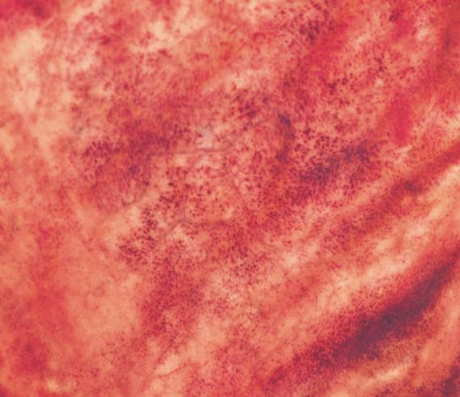
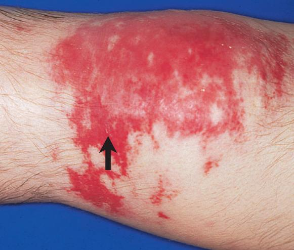
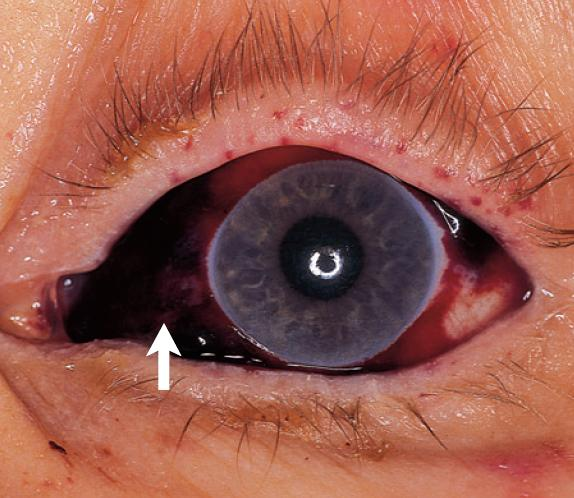
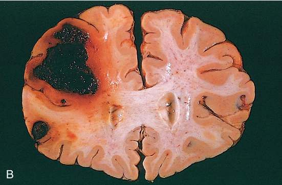
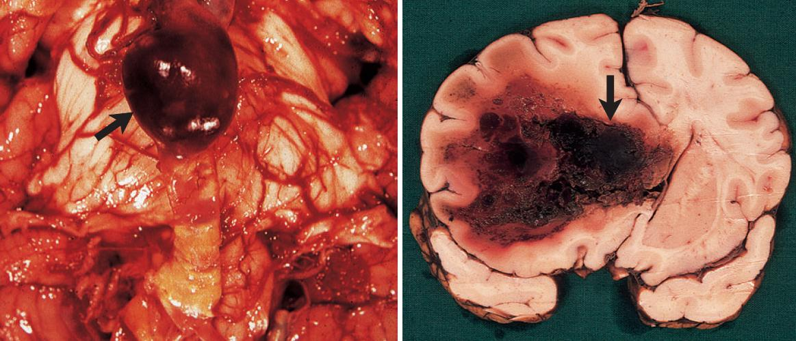

Edema is water leaving the vessel through an intact wall. Hemorrhage is whole blood leaving it through a breach. The clinical question is never simply "is there bleeding?" but "how much, how fast, and where?" — because those three variables, not the diagnosis, determine whether the patient is inconvenienced or dead.ادم یعنی خروج آب از دیوارهٔ سالم رگ. خونریزی یعنی خروج خون کامل از یک شکاف در دیواره. پرسش بالینی هرگز صرفاً «آیا خونریزی هست؟» نیست، بلکه «چقدر، با چه سرعتی و کجا؟» است — چون همین سه متغیر، نه خودِ تشخیص، تعیین میکنند که بیمار فقط دچار زحمت شود یا بمیرد.
By the end of this Part you should be able toدر پایان این بخش باید بتوانید
Define hemorrhage and distinguish rupture (per rhexis) from diapedesis.خونریزی را تعریف کنید و پارگی (per rhexis) را از دیاپدز تفکیک کنید.
Apply the size-based terminology — petechia, purpura, ecchymosis — correctly and state the measurements.اصطلاحات مبتنی بر اندازه — پتشی، پورپورا، اکیموز — را درست بهکار ببرید و ابعاد هر کدام را بگویید.
Explain the colour sequence of a resolving bruise from first principles of haem catabolism.توالی رنگی یک کبودی در حال بهبود را از اصول پایهٔ کاتابولیسم هم توضیح دهید.
Predict the consequence of a haemorrhage from its volume, rate and anatomical site.پیامد یک خونریزی را از روی حجم، سرعت و محل آناتومیک آن پیشبینی کنید.
2.1Definition and the Two Mechanisms of Escapeتعریف و دو مکانیسم خروج خون
Definitionتعریف
Hemorrhage is the extravasation of blood from the cardiovascular system into the extravascular space, a body cavity, or to the exterior.خونریزی عبارت است از خروج خون از دستگاه قلبی–عروقی به فضای خارجعروقی، یک حفرهٔ بدن، یا به بیرون از بدن.
Note what is and is not implied. Hemorrhage is not defined by volume — a petechia is a hemorrhage. It is not defined by visibility — a retroperitoneal bleed is invisible until the patient collapses. It is defined by whole blood, including cells, having left the vascular compartment. That is the difference from edema, where only the fluid phase escapes.توجه کنید چه چیزی در تعریف هست و چه چیزی نیست. خونریزی با حجم تعریف نمیشود — یک پتشی هم خونریزی است. با قابلرؤیت بودن هم تعریف نمیشود — خونریزی خلف صفاقی تا زمان کلاپس بیمار نامرئی است. خونریزی با این تعریف میشود که خون کامل، شامل سلولها، از فضای عروقی خارج شده است. تفاوت آن با ادم همین است که در ادم فقط فاز مایع خارج میشود.
Two ways blood gets outدو راه خروج خون
Table 2.1 Rupture versus diapedesisجدول ۲.۱ — پارگی در برابر دیاپدز
Mechanismمکانیسم
What happens to the wallچه بر سر دیواره میآید
Typical resultنتیجهٔ معمول
Rupture (haemorrhage per rhexis)پارگی (per rhexis)
A frank structural breach of the vessel wall — traumatic laceration, erosion by tumour or ulcer, or bursting of a wall weakened by aneurysm, atherosclerosis or hypertension.یک شکاف ساختاری آشکار در دیوارهٔ رگ — پارگی تروماتیک، خوردهشدن توسط تومور یا زخم، یا ترکیدن دیوارهای که با آنوریسم، آترواسکلروز یا فشار خون بالا ضعیف شده است.
No visible breach. Red cells squeeze one at a time between endothelial cells whose junctions have been loosened by severe congestion, hypoxia or inflammation.هیچ شکاف قابلرؤیتی وجود ندارد. گلبولهای قرمز یکییکی از میان سلولهای اندوتلیالی عبور میکنند که اتصالاتشان بر اثر احتقان شدید، هیپوکسی یا التهاب شل شده است.
Small, slow, multifocal bleeding. The scattered alveolar red cells of chronic pulmonary congestion; petechiae in severe hypoxia.خونریزی کوچک، کند و چندکانونی. گلبولهای قرمز پراکنده در آلوئولها در احتقان مزمن ریه؛ پتشی در هیپوکسی شدید.
2.2Causes of Hemorrhageعلل خونریزی
Trauma — the commonest cause overall: laceration, crush, penetrating injury, fracture.تروما — شایعترین علت بهطور کلی: بریدگی، لهشدگی، آسیب نافذ، شکستگی.
Vascular wall weakness — aneurysm (berry aneurysm of the circle of Willis, abdominal aortic aneurysm, Charcot–Bouchard microaneurysms in chronic hypertension), atherosclerosis, vasculitis, and connective tissue disorders such as Marfan or Ehlers–Danlos syndrome.ضعف دیوارهٔ عروق — آنوریسم (آنوریسم توتمانند حلقهٔ ویلیس، آنوریسم آئورت شکمی، میکروآنوریسمهای شارکو–بوشار در فشار خون مزمن)، آترواسکلروز، واسکولیت، و اختلالات بافت همبند مانند سندرم مارفان یا اهلرز–دانلوس.
Erosion by disease — a peptic ulcer eroding the gastroduodenal artery; a bronchogenic carcinoma invading a pulmonary vessel (haemoptysis); tuberculous cavitation.خوردهشدن توسط بیماری — زخم پپتیک که شریان گاسترودئودنال را میخورد؛ کارسینوم برونکوژنیک که به عروق ریوی تهاجم میکند (هموپتزی)؛ حفرهسازی سلی.
Bleeding disorders (haemorrhagic diatheses) — three headings:
Coagulation factor — haemophilia A (factor VIII) and B (factor IX), von Willebrand disease, vitamin K deficiency, liver failure, warfarin.فاکتور انعقادی — هموفیلی A (فاکتور ۸) و B (فاکتور ۹)، بیماری فونویلبراند، کمبود ویتامین K، نارسایی کبد، وارفارین.
Severe congestion / hypoxia — diapedetic haemorrhage as described above.احتقان شدید یا هیپوکسی — خونریزی دیاپدتیک که بالاتر توضیح داده شد.
High-Yield — platelet problem or factor problem?نکتهٔ کلیدی — مشکل پلاکتی یا مشکل فاکتوری؟
The pattern of bleeding tells you which arm of hemostasis has failed, before any laboratory test. Primary hemostasis (platelet/vWF) defect → mucocutaneous bleeding: petechiae, purpura, epistaxis, gingival bleeding, menorrhagia, easy bruising. Bleeding starts immediately after injury because the platelet plug never forms. Secondary hemostasis (coagulation factor) defect → deep bleeding: haemarthrosis, deep muscle haematomas, rebleeding hours after an initially controlled injury, because the weak platelet plug forms but is never reinforced with fibrin and then breaks down.الگوی خونریزی، پیش از هر آزمایشی به شما میگوید کدام شاخهٔ هموستاز از کار افتاده است. نقص هموستاز اولیه (پلاکت/فونویلبراند) ← خونریزی مخاطی–جلدی: پتشی، پورپورا، خوندماغ، خونریزی لثه، منوراژی، کبودی آسان. خونریزی بلافاصله پس از آسیب شروع میشود، چون پلاک پلاکتی اصلاً تشکیل نمیشود. نقص هموستاز ثانویه (فاکتور انعقادی) ← خونریزی عمقی: همارتروز، هماتوم عمقی عضلانی، خونریزی مجدد ساعتها پس از آسیبی که ابتدا کنترل شده بود، چون پلاک پلاکتی ضعیف تشکیل میشود اما هرگز با فیبرین تقویت نشده و سپس فرو میپاشد.
2.3Classification by Size and Siteطبقهبندی بر اساس اندازه و محل
By size — the skin and mucosal seriesبر اساس اندازه — ردهٔ پوستی و مخاطی
Table 2.2 Petechia → purpura → ecchymosis. Memorise the numbers.جدول ۲.۲ — پتشی ← پورپورا ← اکیموز. اعداد را حفظ کنید.
Termاصطلاح
Sizeاندازه
Typical settingزمینهٔ معمول
Noteنکته
Petechiaeپتشی
1–2 mm۱ تا ۲ میلیمتر
Thrombocytopenia, defective platelet function, vitamin C deficiency, raised intravascular pressure (e.g. straining, coughing, tourniquet)ترومبوسیتوپنی، اختلال عملکرد پلاکت، کمبود ویتامین C، افزایش فشار داخل عروقی (زور زدن، سرفه، تورنیکه)
Pinpoint haemorrhages into skin, mucous membrane or serosal surface. Do not blanch on pressure — this is how they are distinguished from an erythematous rash.خونریزیهای سرسوزنی در پوست، مخاط یا سطح سروزی. با فشار سفید نمیشوند — به همین ترتیب از بثورات اریتماتو تفکیک میشوند.
Purpuraپورپورا
3–5 mm (up to ~1 cm)۳ تا ۵ میلیمتر (تا حدود ۱ سانتیمتر)
All causes of petechiae, plus trauma, vasculitis and increased vascular fragility (amyloidosis, steroids, scurvy)تمام علل پتشی، بهعلاوهٔ تروما، واسکولیت و افزایش شکنندگی عروق (آمیلوئیدوز، کورتیکواستروئید، اسکوربوت)
Palpable purpura implies vessel wall inflammation (vasculitis, e.g. Henoch–Schönlein); flat purpura implies a platelet problem.پورپورای قابللمس نشانهٔ التهاب دیوارهٔ رگ است (واسکولیت، مثلاً هنوخ–شونلاین)؛ پورپورای مسطح نشانهٔ مشکل پلاکتی است.
Ecchymosisاکیموز
> 1–2 cmبیش از ۱ تا ۲ سانتیمتر
Trauma (a "bruise"); also coagulopathy and the causes aboveتروما («کبودی»)؛ و نیز اختلالات انعقادی و علل بالا
A large subcutaneous haematoma. Its evolving colour is diagnostic of its age — see §2.4.هماتوم بزرگ زیرجلدی. تغییر رنگ آن نشانگر سن آن است — بخش ۲.۴.
An accumulation of blood within a tissue, forming a discrete mass. May be trivial (a bruise) or fatal (a subdural or retroperitoneal haematoma).تجمع خون درون بافت که یک تودهٔ مشخص میسازد. میتواند بیاهمیت (کبودی) یا کشنده (هماتوم سابدورال یا خلف صفاقی) باشد.

Fig 2.1 Petechiae of the gastric mucosa — pinpoint, 1–2 mm, non-blanching.پتشی مخاط معده — سرسوزنی، ۱ تا ۲ میلیمتر، بدون سفیدشدن با فشار.Fig 2.2 Purpuric haemorrhages of the testis, 3–5 mm — distinctly larger than petechiae and clearly visible against the pale tunica.خونریزیهای پورپوریک بیضه، ۳ تا ۵ میلیمتر — بهوضوح بزرگتر از پتشی و بهخوبی در برابر تونیکای کمرنگ قابلمشاهده.

Fig 2.3 Ecchymoses, >1–2 cm — extensive subcutaneous haemorrhage after minor trauma in a patient with a coagulopathy.اکیموزها، بیش از ۱ تا ۲ سانتیمتر — خونریزی وسیع زیرجلدی پس از ترومای خفیف در بیمار با اختلال انعقادی.
By site — blood in a cavityبر اساس محل — خون در حفره
Table 2.3 Named cavity haemorrhagesجدول ۲.۳ — نامگذاری خونریزیهای حفرهای
Termاصطلاح
Cavityحفره
Clinical significanceاهمیت بالینی
Haemothoraxهموتوراکس
Pleural cavityحفرهٔ پلور
The pleural space can hold litres. Rib fracture, penetrating trauma, ruptured aortic aneurysm. Causes both hypovolaemia and lung compression.فضای پلور میتواند چندین لیتر جا دهد. شکستگی دنده، تروما نافذ، پارگی آنوریسم آئورت. هم هیپوولمی و هم فشردهشدن ریه ایجاد میکند.
Haemopericardiumهموپریکارد
Pericardial cavityحفرهٔ پریکارد
The volume that kills is small. As little as 200–300 mL accumulating rapidly causes cardiac tamponade, because the parietal pericardium is fibrous and cannot stretch acutely. Causes: myocardial rupture after infarction, aortic dissection bleeding back into the sac, penetrating trauma.حجمی که میکُشد کوچک است. تنها ۲۰۰ تا ۳۰۰ میلیلیتر که بهسرعت جمع شود تامپوناد قلبی ایجاد میکند، چون پریکارد جداری فیبروز است و بهصورت حاد کش نمیآید. علل: پارگی میوکارد پس از انفارکتوس، دیسکسیون آئورت با خونریزی به داخل کیسه، تروما نافذ.
Haemoperitoneumهموپریتونئوم
Peritoneal cavityحفرهٔ صفاق
Ruptured spleen or liver, ruptured ectopic pregnancy, ruptured abdominal aortic aneurysm. Large volumes can be lost before the abdomen looks distended.پارگی طحال یا کبد، پارگی حاملگی خارج رحمی، پارگی آنوریسم آئورت شکمی. حجم زیادی میتواند از دست برود پیش از آنکه شکم متسع بهنظر برسد.
Haemarthrosisهمارتروز
Joint cavityحفرهٔ مفصل
Hallmark of haemophilia. Repeated bleeds into the knee, ankle or elbow cause synovial hypertrophy, cartilage destruction and crippling deformity.مشخصهٔ هموفیلی. خونریزیهای مکرر در زانو، مچ پا یا آرنج باعث هیپرتروفی سینوویوم، تخریب غضروف و تغییر شکل ناتوانکننده میشود.
Fig 2.4 Haemopericardium. The opened pericardial sac is filled with clotted blood (arrow) following rupture of an infarcted left ventricular free wall — fatal tamponade.هموپریکارد. کیسهٔ باز شدهٔ پریکارد پر از خون لختهشده است (پیکان)، بهدنبال پارگی دیوارهٔ آزاد بطن چپ دچار انفارکتوس — تامپوناد کشنده.Fig 2.5 Haemarthrosis of the right knee in haemophilia — a swollen, warm, exquisitely painful joint held in slight flexion.همارتروز زانوی راست در هموفیلی — مفصل متورم، گرم و بهشدت دردناک که در فلکسیون خفیف نگه داشته شده است.

Fig 2.6 Subconjunctival haemorrhage (arrow) — alarming in appearance but usually benign, following a cough, sneeze or Valsalva.خونریزی زیرملتحمهای (پیکان) — ظاهری نگرانکننده اما معمولاً خوشخیم، پس از سرفه، عطسه یا مانور والسالوا.

Fig 2.7 Intracerebral haemorrhage. A large haematoma has destroyed the basal ganglia and displaced the midline — the classic site of hypertensive haemorrhage, arising from ruptured Charcot–Bouchard microaneurysms of the lenticulostriate arteries.خونریزی داخل مغزی. هماتوم بزرگی هستههای قاعدهای را تخریب و خط میانی را جابهجا کرده است — محل کلاسیک خونریزی ناشی از فشار خون بالا، از پارگی میکروآنوریسمهای شارکو–بوشار شریانهای لنتیکولواستریات.

Fig 2.8 Fatal massive cerebral haemorrhage with rupture into the ventricular system. Here the lethal factor is not blood loss — it is the site.خونریزی مغزی گستردهٔ کشنده با پارگی به داخل سامانهٔ بطنی. اینجا عامل کشنده از دست رفتن خون نیست — بلکه محل است.
2.4Why a Bruise Changes Colourچرا کبودی تغییر رنگ میدهد
The colour sequence of a resolving ecchymosis is not a curiosity — it is haem catabolism happening in front of you, and it lets you date an injury, which matters in forensic and paediatric practice.توالی رنگی یک اکیموز در حال بهبود صرفاً یک نکتهٔ جالب نیست — کاتابولیسم هم است که در برابر چشمان شما اتفاق میافتد و به شما اجازه میدهد سن آسیب را تعیین کنید، که در طب قانونی و طب کودکان اهمیت دارد.
Mechanism — the colour clock of a bruiseمکانیسم — ساعت رنگی یک کبودی
Day 0–1: red-purple. Extravasated red cells are intact and their haemoglobin is still largely oxygenated, then desaturates.You are simply looking at blood through skin. As the trapped blood loses its oxygen, the colour deepens from red to blue-purple.روز صفر تا یک: قرمز–بنفش. گلبولهای قرمز خارجشده سالماند و هموگلوبین آنها هنوز عمدتاً اکسیژندار است و سپس اشباع خود را از دست میدهد.شما صرفاً خون را از پشت پوست میبینید. با از دست رفتن اکسیژن خونِ محبوس، رنگ از قرمز به بنفش–آبی تیره میشود.
Day 1–5: blue-black. Red cells lyse; free haemoglobin is phagocytosed by macrophages recruited to the site.Extravasated red cells have no supporting environment and undergo haemolysis within a day or two; macrophages arrive as part of the normal clean-up response.روز یک تا پنج: آبی–سیاه. گلبولهای قرمز لیز میشوند و هموگلوبین آزاد توسط ماکروفاژهای فراخواندهشده به محل فاگوسیت میگردد.گلبولهای قرمز خارجشده محیط حمایتی ندارند و ظرف یکیدو روز همولیز میشوند؛ ماکروفاژها بهعنوان بخشی از پاسخ طبیعی پاکسازی میرسند.
Day 5–7: green. Inside the macrophage, haem oxygenase opens the porphyrin ring of haem, releasing iron and carbon monoxide and producing biliverdin, which is green.Haem oxygenase is the rate-limiting enzyme of haem degradation; biliverdin is its immediate, green-coloured product.روز پنج تا هفت: سبز. درون ماکروفاژ، آنزیم هم اکسیژناز حلقهٔ پورفیرین هم را باز میکند، آهن و مونوکسید کربن آزاد میسازد و بیلیوردین تولید میکند که سبزرنگ است.هم اکسیژناز آنزیم محدودکنندهٔ سرعت در تجزیهٔ هم است و بیلیوردین محصول بلافصل و سبزرنگ آن.
Day 7–10: yellow-brown.Biliverdin reductase converts biliverdin to bilirubin, which is yellow.This is the same reaction that occurs in the spleen during normal red cell turnover — the bruise is simply doing it locally and visibly.روز هفت تا ده: زرد–قهوهای. آنزیم بیلیوردین ردوکتاز بیلیوردین را به بیلیروبین تبدیل میکند که زردرنگ است.این همان واکنشی است که در طحال طی چرخش طبیعی گلبولهای قرمز رخ میدهد — کبودی فقط آن را بهصورت موضعی و قابلمشاهده انجام میدهد.
Day 10–14+: golden-brown, fading. The iron liberated in step 3 is stored as haemosiderin, a golden-brown pigment, while bilirubin diffuses away and is cleared.Bilirubin is soluble and leaves; iron is not excretable and stays until macrophages slowly carry it off — which is why the brown stain is the last colour to disappear, and why chronic venous congestion of the leg leaves permanent brown skin staining.روز ده تا چهارده و بیشتر: قهوهای–طلایی و محوشونده. آهن آزادشده در گام ۳ بهصورت هموسیدرین، رنگدانهٔ قهوهای–طلایی، ذخیره میشود، در حالی که بیلیروبین منتشر شده و پاک میگردد.بیلیروبین محلول است و میرود؛ آهن قابل دفع نیست و تا زمانی که ماکروفاژها بهآرامی آن را ببرند باقی میماند — به همین دلیل رنگ قهوهای آخرین رنگی است که محو میشود و به همین دلیل احتقان مزمن وریدی ساق، رنگپذیری قهوهای دائمی پوست بر جای میگذارد.
Red-purple → blue-black → green → yellow → golden-brown. Haemoglobin → biliverdin → bilirubin → haemosiderin. The same pathway, in the same order, every time.قرمز–بنفش ← آبی–سیاه ← سبز ← زرد ← قهوهای طلایی. هموگلوبین ← بیلیوردین ← بیلیروبین ← هموسیدرین. همیشه همین مسیر و همین ترتیب.
Mnemonicیادیار
"Really Bad Grapes Yield Brown" — Red · Blue · Green · Yellow · Brown."Really Bad Grapes Yield Brown" — قرمز · آبی · سبز · زرد · قهوهای.
Clinical Correlation — massive haemorrhage and jaundiceارتباط بالینی — خونریزی گسترده و زردی
A very large haematoma — a retroperitoneal bleed, or a huge subgaleal haemorrhage in a newborn — can produce clinically obvious jaundice a few days later. The reason follows directly from the mechanism above: breaking down a large mass of extravasated red cells generates a bilirubin load that outstrips the liver's conjugating capacity, giving an unconjugated (indirect) hyperbilirubinaemia. This is a favourite exam scenario in neonates with cephalohaematoma.یک هماتوم بسیار بزرگ — خونریزی خلف صفاقی، یا خونریزی وسیع زیرگالئایی در نوزاد — میتواند چند روز بعد زردی آشکار بالینی ایجاد کند. دلیل آن مستقیماً از مکانیسم بالا میآید: تجزیهٔ تودهٔ بزرگی از گلبولهای قرمز خارجشده باری از بیلیروبین تولید میکند که از ظرفیت کونژوگاسیون کبد فراتر میرود و هیپربیلیروبینمی غیرکونژوگه (غیرمستقیم) ایجاد میکند. این سناریوی محبوبی در امتحانات دربارهٔ نوزادان با سفالوهماتوم است.
2.5Clinical Consequences — Volume, Rate, Siteپیامدهای بالینی — حجم، سرعت و محل
Three variables determine the outcome of any haemorrhage. Learn them as a triad, because a question will always be testing one of them.سه متغیر، پیامد هر خونریزی را تعیین میکنند. آنها را بهصورت یک سهگانه یاد بگیرید، چون هر سؤالی یکی از آنها را میسنجد.
① Volume① حجم
Total blood volume in an adult is about 5 L (70 mL/kg).حجم کل خون در بزرگسال حدود ۵ لیتر (۷۰ میلیلیتر به ازای هر کیلوگرم) است.
Table 2.4 Classes of acute haemorrhage in a 70 kg adultجدول ۲.۴ — طبقات خونریزی حاد در بزرگسال ۷۰ کیلوگرمی
Classطبقه
Lossمیزان از دست رفته
Physiologyفیزیولوژی
Signsنشانهها
Iیک
<15% (<750 mL)کمتر از ۱۵٪ (زیر ۷۵۰ میلیلیتر)
Fully compensated by venoconstriction and transcapillary refillکاملاً با انقباض وریدی و پرشدن ترانسکاپیلاری جبران میشود
Essentially none; mild anxiety. This is a blood donation.تقریباً هیچ؛ اضطراب خفیف. این همان اهدای خون است.
IIدو
15–30% (750–1500 mL)۱۵ تا ۳۰٪ (۷۵۰ تا ۱۵۰۰ میلیلیتر)
Sympathetic activation maintains blood pressure at the cost of vasoconstrictionفعالشدن سمپاتیک فشار خون را به قیمت انقباض عروقی حفظ میکند
Tachycardia, narrowed pulse pressure, cool clammy skin, anxiety. Systolic BP still normal — the classic trap.تاکیکاردی، کاهش فشار نبض، پوست سرد و مرطوب، اضطراب. فشار سیستولیک هنوز طبیعی — دام کلاسیک.
IIIسه
30–40% (1500–2000 mL)۳۰ تا ۴۰٪ (۱۵۰۰ تا ۲۰۰۰ میلیلیتر)
The same volume lost slowly and lost quickly produce entirely different pictures.از دست دادن حجم یکسان بهصورت آهسته یا سریع، دو تصویر کاملاً متفاوت میسازد.
Rapid loss → hypovolaemic shock. There is no time for compensation; the problem is loss of circulating volume and therefore of cardiac output. Note that haemoglobin concentration may initially be normal, because red cells and plasma are lost together — the haematocrit falls only after hours, as interstitial fluid shifts into the vascular space to refill it.از دست رفتن سریع ← شوک هیپوولمیک. زمانی برای جبران نیست؛ مشکل، از دست رفتن حجم در گردش و در نتیجه برونده قلبی است. توجه کنید که غلظت هموگلوبین ممکن است در ابتدا طبیعی باشد، چون گلبول قرمز و پلاسما با هم از دست میروند — هماتوکریت تنها پس از چند ساعت افت میکند، وقتی مایع بینابینی به فضای عروقی منتقل شده و آن را دوباره پر میکند.
Slow, chronic loss (occult colonic carcinoma, menorrhagia, peptic ulcer oozing) → iron-deficiency anaemia. Volume is replaced continuously, so the patient is never hypovolaemic; instead, iron stores are progressively depleted until erythropoiesis fails. The presentation is fatigue, pallor and a microcytic, hypochromic blood film — not shock. In an adult male or postmenopausal female, iron-deficiency anaemia is gastrointestinal malignancy until proven otherwise.از دست رفتن آهسته و مزمن (کارسینوم مخفی کولون، منوراژی، ترشح خونی زخم پپتیک) ← کمخونی فقر آهن. حجم پیوسته جایگزین میشود، پس بیمار هرگز هیپوولمیک نیست؛ در عوض ذخایر آهن بهتدریج تخلیه میشود تا خونسازی شکست بخورد. تظاهر آن خستگی، رنگپریدگی و لام خون میکروسیتیک و هیپوکروم است، نه شوک. در مرد بزرگسال یا زن یائسه، کمخونی فقر آهن تا اثبات خلاف آن، بدخیمی دستگاه گوارش است.
③ Site③ محل
This is the variable that overrides the other two. A volume of blood that would be trivial in the thigh is lethal in the wrong place, because the damage is mechanical, not volumetric.این متغیری است که دو متغیر دیگر را تحتالشعاع قرار میدهد. حجمی از خون که در ران بیاهمیت است، در جای نادرست کشنده میشود، چون آسیب مکانیکی است نه حجمی.
Brainstem — a few millilitres destroy the respiratory and cardiovascular centres. Fatal.ساقهٔ مغز — چند میلیلیتر مراکز تنفسی و قلبی–عروقی را نابود میکند. کشنده.
Pericardial sac — 200–300 mL acutely causes tamponade and obstructive shock.کیسهٔ پریکارد — ۲۰۰ تا ۳۰۰ میلیلیتر بهصورت حاد تامپوناد و شوک انسدادی ایجاد میکند.
Intracranial (subdural, extradural, intracerebral) — raised intracranial pressure and herniation.داخل جمجمه (سابدورال، اپیدورال، داخل مغزی) — افزایش فشار داخل جمجمه و فتق مغزی.
Airway (retropharyngeal, laryngeal) — asphyxia from a small volume.راه هوایی (خلف حلق، حنجره) — خفگی با حجم اندک.
Skin and subcutaneous tissue — the same volume is merely a bruise.پوست و بافت زیرجلدی — همان حجم صرفاً یک کبودی است.
Exam Trapدام امتحانی
Do not reach for haemoglobin to assess an acute bleed. In the first hours it is falsely reassuring, because whole blood is lost — cells and plasma in the same proportion — so the concentration is unchanged. The early indicators are heart rate and pulse pressure, not haematocrit. Conversely, a low haemoglobin with a normal blood pressure and no tachycardia points to chronic loss.برای ارزیابی خونریزی حاد سراغ هموگلوبین نروید. در ساعات نخست بهطور کاذب آرامشبخش است، چون خون کامل از دست میرود — سلول و پلاسما به نسبت یکسان — پس غلظت تغییر نمیکند. شاخصهای اولیه ضربان قلب و فشار نبض هستند، نه هماتوکریت. برعکس، هموگلوبین پایین با فشار خون طبیعی و بدون تاکیکاردی به از دست رفتن مزمن اشاره دارد.